Preheat the oven to 375°F.
Wrap the springform pan with one large piece of heavy-duty aluminum foil, covering the underside of the pan and extending all the way to the top. Repeat with another sheet of foil for insurance. Spray the inside of the pan with nonstick cooking spray.
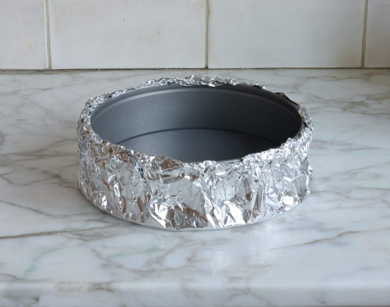In a medium bowl, combine the graham cracker crumbs, melted butter, sugar, and salt.
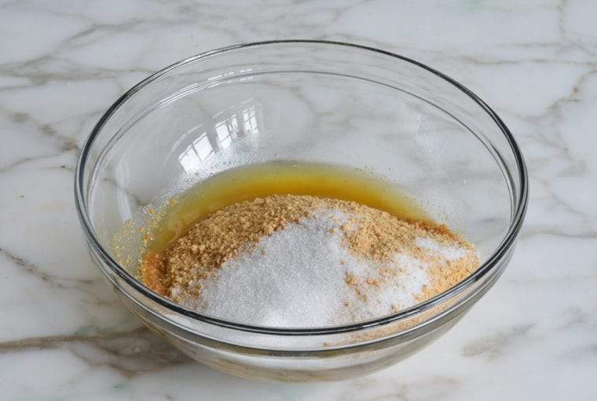Stir until well combined.
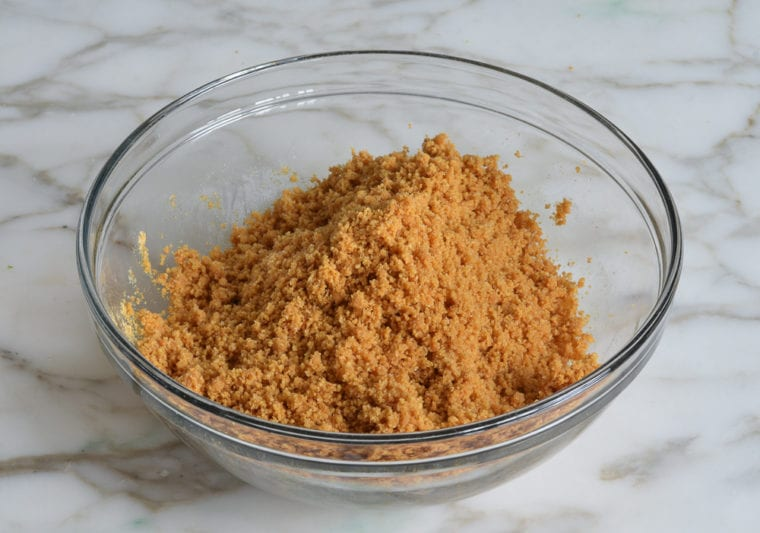Press the crumbs into an even layer on the bottom of the prepared pan. Bake the crust for 10 minutes, until set. Remove the pan from the oven and set aside. Reduce the oven temperature to 325°F.
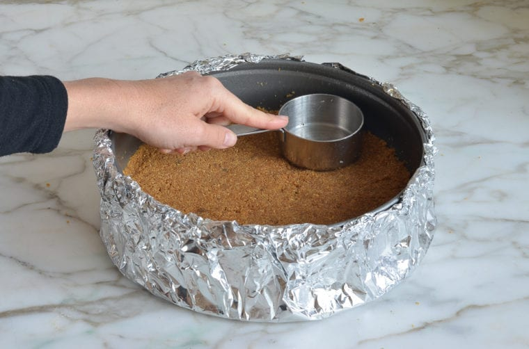In the bowl of an electric mixer fitted with the paddle attachment or beaters, combine the cream cheese, sugar, and flour.
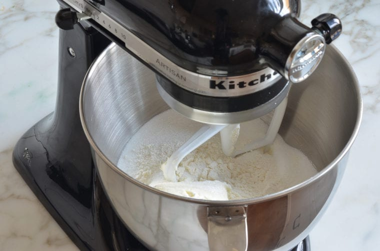Beat on medium speed until just smooth, about 1 minute. Scrape the bottom and sides of the bowl to be sure the mixture is evenly combined.
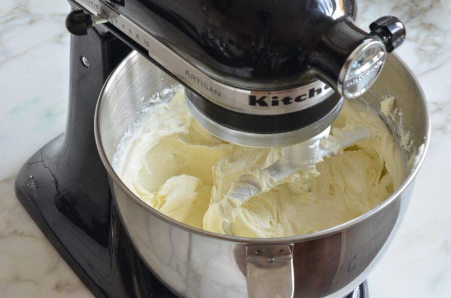Add the vanilla, lemon zest, lemon juice, and salt; beat on low speed until just combined.
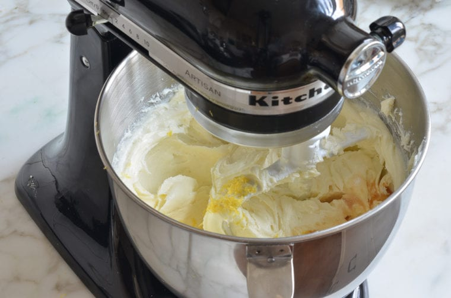Add the eggs, one at a time, mixing on low speed until incorporated, scraping the bowl as necessary.
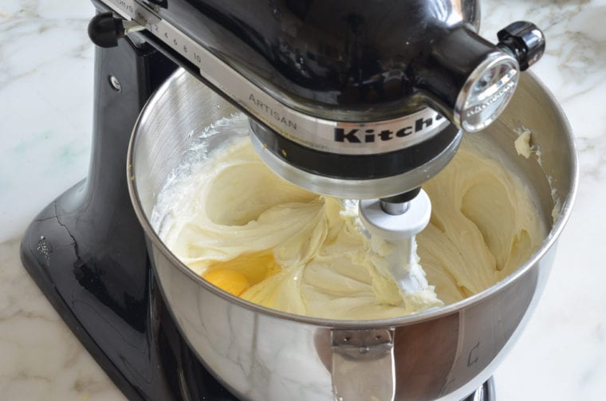Mix in the sour cream.
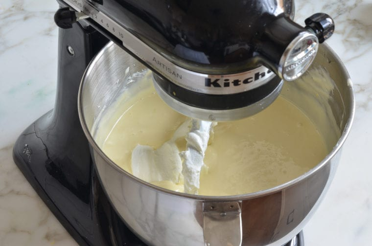Make sure the batter is uniform but do not over-mix.
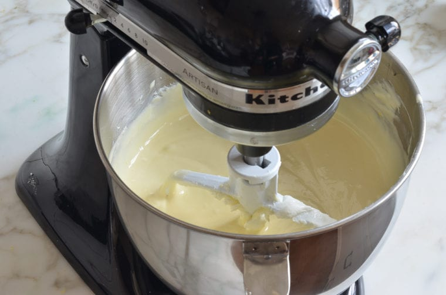Pour the batter on top of the crust.

Set the unbaked cheesecake in a large roasting pan. Pour boiling water into the roasting pan until it comes about one inch up the side of the cake pan. The water bath (also called a bain marie) regulates the temperature and keeps the cheesecake baking at an even, low heat. The steam/humidity created by the water bath also protects the cheesecake from drying out and cracking.
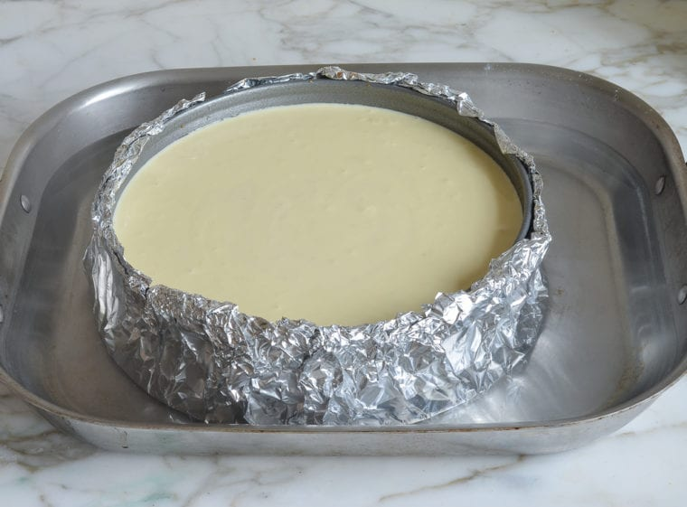Bake until the cake is just set, 1 hour and 30 minutes to 1 hour and 45 minutes. The cake should not look liquidy at all but will wobble just a bit when the pan is nudged; it will continue to cook as it cools.
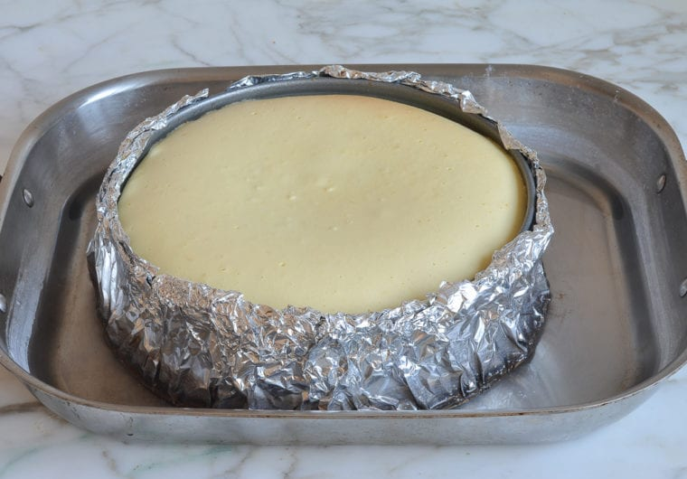Carefully remove the roasting pan from the oven and set it on a wire rack. Cool the cheesecake in the water bath until the water is just warm, about 45 minutes. Remove the springform pan from the water bath, discard the foil, and transfer the cheesecake to the refrigerator to cool for at least 8 hours or overnight.
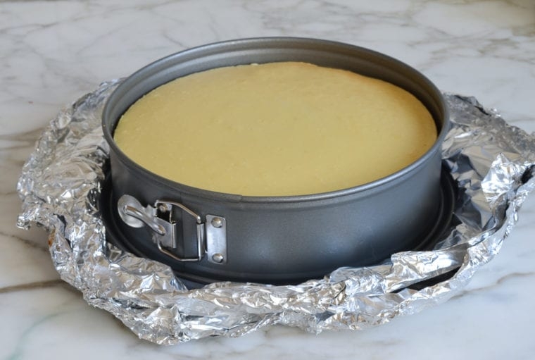Remove the sides of the springform pan. You can serve the cheesecake right from the base of the springform pan. Or, if you’d like to transfer it to a serving platter, run a long, thin spatula between the crust and the pan bottom, and then use two large spatulas to transfer the cheesecake to a serving dish. Slice with a sharp knife, wiping the knife clean between slices. Serve with berry sauce, if you like.